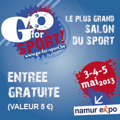
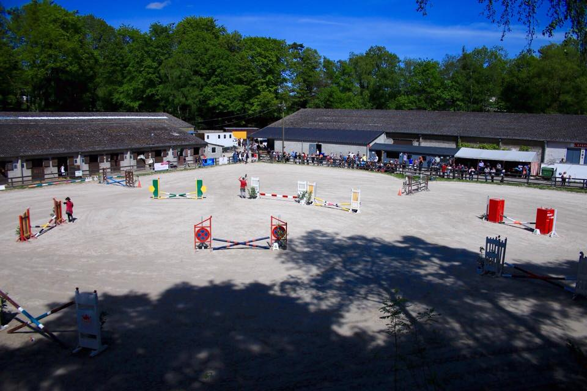
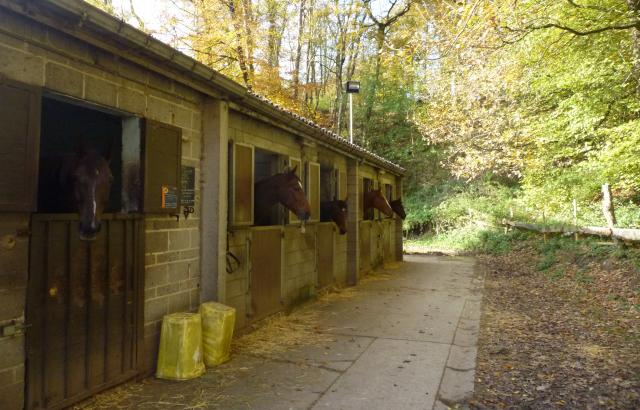

Accueil

Fondé en 1949, par un groupe d’amis cavaliers, et implanté depuis plus de 40 ans à
la lisière du domaine universitaire du Sart-Tilman.
Le plus ancien cercle équestre de la Province de Liège vous offre :
- 70 boxes, douches et salles de pansages intérieures et extérieures ;
- Une piste extérieure de 80 sur 40 mètres ;
- Deux pistes intérieures de 15 sur 30 mètres et 46 sur 20 mètres ;
- Prairies accessibles d'avril à octobre ;
- Moniteurs brevetés, leçons collectives ou individuelles pour tous niveaux.
 
Association sans but lucratif visant à développer la pratique du sport équestre sous toutes ses formes